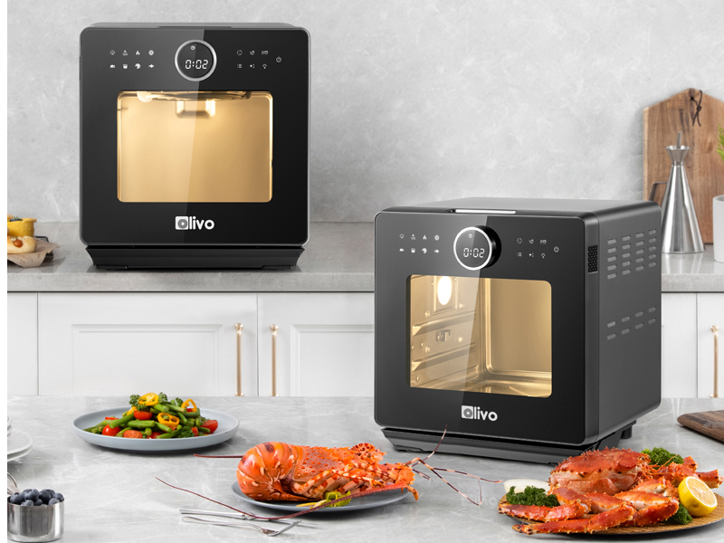
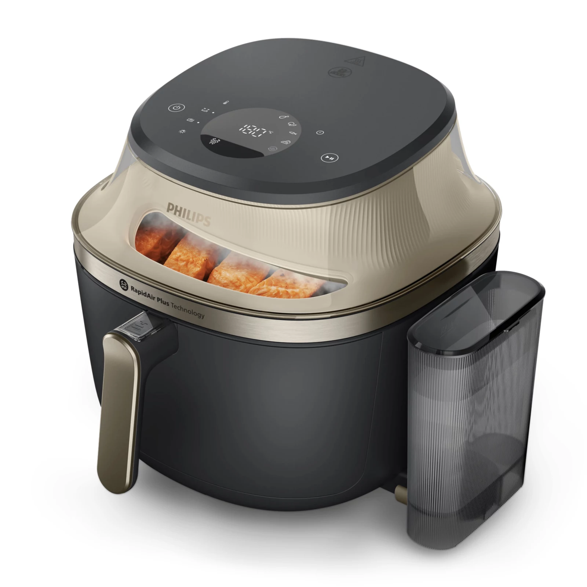
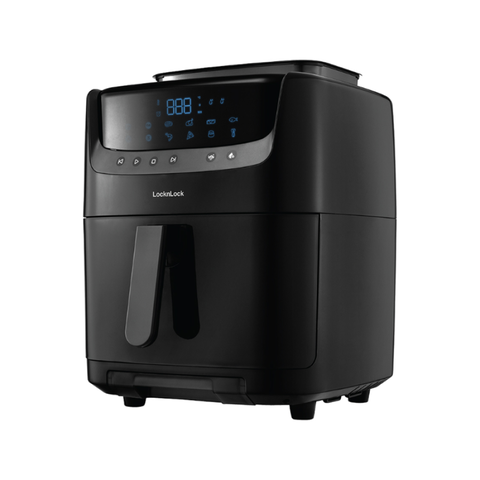
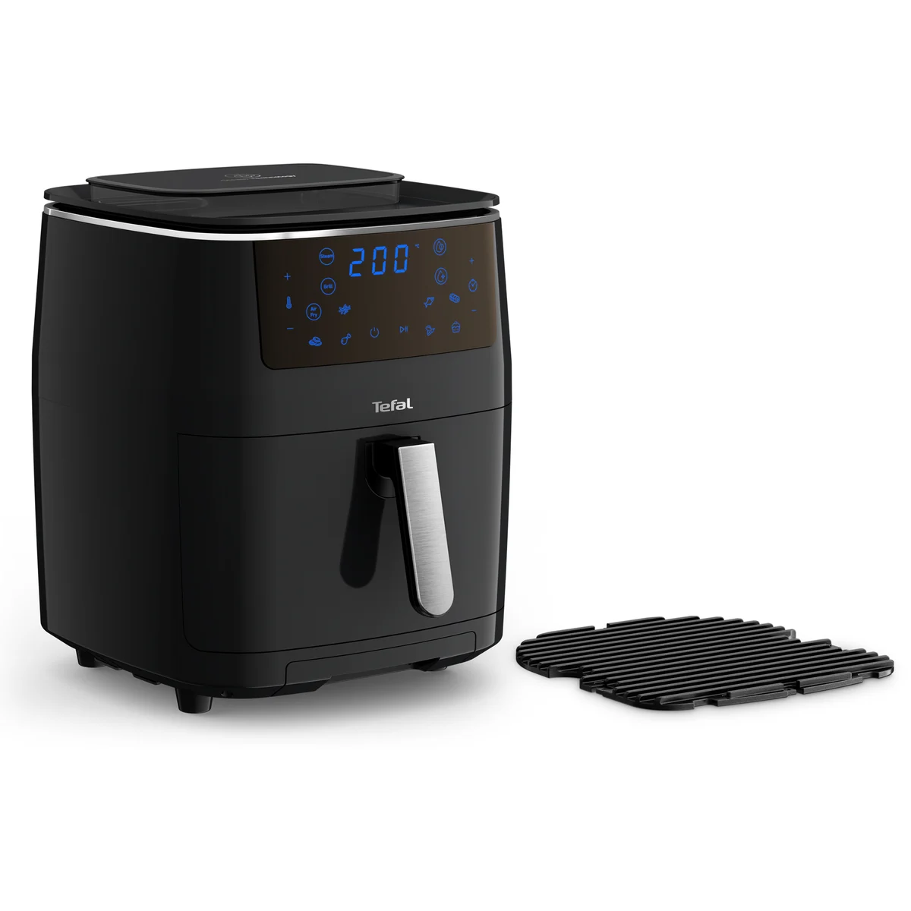

Một người bạn nhắn hỏi mình: nhà mới mua nồi chiên không dầu nửa năm, giờ thấy quảng cáo nồi chiên hơi nước nấu ngon hơn, có nên đổi không? Câu hỏi này mình nhận không ít lần trong năm nay, vì nồi chiên hơi nước đang là trào lưu mới của thị trường đồ gia dụng.
Trả lời ngắn gọn: nồi hơi nước nấu ngon hơn nồi thường ở món dễ khô như thịt gà, cá, làm bánh; nhưng đắt gấp đôi, to hơn và vệ sinh mất công hơn. Nếu chỉ cần chiên khoai, nướng thịt cơ bản thì nồi thường vẫn đủ. Dưới đây mình giải thích cơ chế khác nhau ra sao, so sánh 4 mẫu bán chạy nhất 2026 và chốt giúp bạn có nên mua.
Nồi chiên hơi nước khác gì nồi chiên thường?
Nồi chiên không dầu thường hoạt động bằng một nguyên lý duy nhất: thanh nhiệt làm nóng, quạt thổi khí nóng đối lưu tốc độ cao quanh thực phẩm, tạo lớp vỏ giòn mà gần như không cần dầu. Đơn giản, nhanh, gọn.
Nồi chiên hơi nước giữ nguyên cơ chế đó, thêm bình chứa nước và bộ phun hơi nước vào khoang nấu. Hơi nước nóng phun cùng luồng khí nóng giúp thực phẩm chín trong môi trường ẩm hơn: thịt không khô quắt, cá giữ độ mọng, rau củ hấp chín mềm. Nhiều mẫu còn hấp được há cảo, làm bánh mì, thậm chí tự vệ sinh bằng hơi nước.
| Tiêu chí | Nồi chiên thường | Nồi chiên hơi nước |
|---|---|---|
| Cơ chế nấu | Khí nóng đối lưu | Khí nóng + hơi nước phun vào khoang |
| Độ giòn | Giòn rụm hơn (khoai chiên, gà rán) | Giòn vừa, thiên về mềm ẩm |
| Giữ ẩm thực phẩm | Món dày dễ bị khô | Thịt, cá ít khô hơn rõ rệt |
| Hấp, làm bánh | Không | Có (há cảo, rau củ, bánh mì) |
| Vệ sinh | Đơn giản | Mất công hơn (bình nước, khoang nước cần chùi cặn) |
| Kích thước, cân nặng | Gọn nhẹ | To và nặng hơn ở cùng dung tích |
| Giá tham khảo 2026 | 1 – 3,5 triệu | 2,8 – 7,7 triệu |
Ai nên mua, ai không nên mua?
Nên mua nếu bạn thuộc một trong các trường hợp này:
- Nhà hay nấu thịt gà, cá, sườn nướng và khó chịu vì món hay bị khô.
- Muốn một máy làm được nhiều việc: chiên, nướng, hấp, làm bánh.
- Bếp đủ rộng để kê máy to, không ngại học vài chế độ mới.
Không nên mua nếu:
- Chỉ cần chiên khoai, nướng thịt cơ bản, làm lại đồ chiên — nồi thường đã quá đủ.
- Bếp nhỏ, không có chỗ kê máy cồng kềnh.
- Ngân sách dưới 2,5 triệu — phân khúc này chưa có nồi hơi nước đáng mua.
- Ngại vệ sinh, ngại học cách chỉnh nhiều chế độ.
Top 4 nồi chiên hơi nước đáng mua 2026
Minh bạch: các nút "Xem giá" trong bài là link affiliate Shopee. Bạn mua giá không đổi, mình nhận một khoản hoa hồng nhỏ để duy trì blog.
| # | Mẫu | Dung tích | Công suất | Bình nước | Giá tham khảo |
|---|---|---|---|---|---|
| 1 | Olivo SF16 Pro | 16L | 2800W | 600ml | ~4,99–5,49 triệu |
| 2 | Philips NA543/00 | 7,2L | 2000W | Không công bố | ~5,5–6,74 triệu |
| 3 | Lock&Lock EJF881 | 7L | 900–1700W | Không công bố | ~2,77–3,76 triệu |
| 4 | Tefal FW201815 | 6,5L | 1600–1900W | 1,1L | ~4,06–7,69 triệu |
1. Olivo SF16 Pro, 16L

Giá tham khảo: khoảng 4.990.000đ – 5.490.000đ (giá thay đổi theo đợt sale)
Đây là cái tên được nhắc nhiều nhất khi nói về nồi chiên hơi nước ở Việt Nam: dung tích 16L lớn nhất phân khúc, công suất 2800W mạnh nhất, 56 chương trình nấu cài sẵn (bản 2026 nâng lên 70). Bình nước 600ml, nhiệt tối đa 230°C, bảo hành chính hãng 24 tháng.
- Dung tích 16L lớn nhất, nấu được mẻ to cho gia đình đông
- Công suất 2800W, làm nóng nhanh
- 56 chương trình cài sẵn, ít phải tự chỉnh
- Bảo hành 24 tháng chính hãng
- Kích thước 33×32×35cm, nặng 8.75kg, chiếm diện tích bếp
- Giá cao hơn mặt bằng nồi thường 3-4 lần
- Có 2 phiên bản 56 và 70 chương trình, cần hỏi rõ khi mua
Hợp với ai: gia đình đông người, hay nấu nhiều món, muốn một máy thay cả lò nướng lẫn nồi hấp.
Xem giá tốt nhất trên Shopee →2. Philips NA543/00, 7,2L

Giá tham khảo: khoảng 5.500.000đ – 6.740.000đ (giá thay đổi theo đợt sale)
Mẫu hơi nước của thương hiệu toàn cầu duy nhất phổ biến tại Việt Nam (dòng Airfryer 5000 Series, ra mắt 2026). Máy có 3 chế độ: chiên khí nóng, hấp và chiên kết hợp hơi nước SteamFry, cùng chế độ tự vệ sinh SteamClean làm mềm cặn dầu bám thanh nhiệt. Công suất 2000W, dải nhiệt 40–200°C, 12 chương trình cài sẵn, hẹn giờ 1 phút–24 giờ, bảo hành 24 tháng.
- Thương hiệu toàn cầu, bảo hành 24 tháng yên tâm
- Có chế độ tự vệ sinh bằng hơi nước SteamClean
- 3 chế độ nấu linh hoạt, 12 chương trình cài sẵn
- Hẹn giờ tới 24 giờ, tiện nấu chậm
- Giá cao nhất trong danh sách
- Kích thước lớn, bếp nhỏ khó kê
- Dung tích bình nước không được công bố
Hợp với ai: người tin thương hiệu lớn, ngại vệ sinh, sẵn sàng trả cao cho sự yên tâm.
Xem giá tốt nhất trên Shopee →3. Lock&Lock EJF881, 7L

Giá tham khảo: khoảng 2.765.000đ – 3.764.000đ (giá thay đổi theo đợt sale)
Đây là cửa ngõ rẻ nhất để trải nghiệm nồi chiên hơi nước: giá chỉ ngang nồi chiên thường tầm trung, nhưng vẫn có chức năng hấp và 8 menu nấu cài sẵn (thịt, gà, cá, tôm, pizza đông lạnh, bánh pudding, rau củ...). Trên Tiki, mẫu này có hơn 1.100 lượt bán và gần 600 đánh giá. Công suất 900–1700W, dải nhiệt 80–200°C. Lưu ý: bảo hành 12 hay 24 tháng tùy kênh bán, bạn nên hỏi rõ trước khi mua.
- Rẻ nhất dòng hơi nước, chỉ từ khoảng 2,8 triệu
- Bán chạy, nhiều đánh giá thật để tham khảo
- 8 menu cài sẵn, dùng ngay không cần học nhiều
- Công suất 900–1700W, nấu mẻ lớn chậm hơn các mẫu trên
- Thông số bình nước không được công bố
- Bảo hành 12 hay 24 tháng tùy kênh bán, cần hỏi rõ khi mua
Hợp với ai: muốn thử nồi hơi nước với chi phí thấp nhất, gia đình 3-5 người.
Xem giá tốt nhất trên Shopee →4. Tefal FW201815, 6,5L

Giá tham khảo: khoảng 4.060.000đ – 7.690.000đ tùy kênh bán (chênh lệch lớn, cần so giá kỹ)
Mẫu này là 3 trong 1: chiên không dầu, hấp và nướng (grill), đúng như tên gọi. Bình nước 1.1L hấp liên tục 70–85 phút, đủ hấp cả con gà. 7 chương trình tự động, công suất 1600–1900W, nhiệt 80–200°C, dung tích 6.5L (khoảng 1.6kg thực phẩm), bảo hành 24 tháng chính hãng Groupe SEB Việt Nam. Lưu ý: giá chênh rất lớn giữa các kênh (AEON khoảng 4,06 triệu, Tiki niêm yết 7,69 triệu), nhất định phải so giá trước khi mua.
- 3 trong 1: chiên, hấp, nướng trong một máy
- Bình nước 1.1L lớn, hấp liên tục hơn 1 giờ
- Thương hiệu Pháp, bảo hành 24 tháng hàng chính hãng
- Giá chênh lệch rất lớn giữa các kênh, cần so giá kỹ
- Kích thước và trọng lượng các nguồn ghi khác nhau, nên xem trực tiếp
Hợp với ai: người muốn một máy thay cả nồi hấp lẫn vỉ nướng, hay hấp món to.
Xem giá tốt nhất trên Shopee →Mẹo dùng nồi chiên hơi nước bền hơn
Mấy kinh nghiệm này giúp máy bền và món ăn ngon hơn:
- Dùng nước lọc đổ vào bình, tránh nước máy cứng gây cặn vôi bám bộ phun hơi theo thời gian.
- Sau mỗi lần dùng chế độ hấp, đổ bỏ nước thừa và lau khô khoang chứa, tránh đọng nước sinh mùi hôi.
- 1–2 tháng vệ sinh bình nước một lần bằng giấm pha loãng nếu thấy cặn trắng bám thành bình.
- Đừng dùng chế độ hơi nước cho món cần giòn rụm như khoai tây chiên: hơi nước làm mềm vỏ, những món này hợp nồi thường hơn.
- Đọc kỹ hướng dẫn lượng nước cho từng chế độ, cho quá nhiều nước món dễ bị nhão, cho quá ít thì hơi không đủ.
Câu hỏi thường gặp
Nồi chiên hơi nước có thay thế hoàn toàn nồi chiên thường được không?
Gần như được, vì nó vẫn có chế độ chiên khí nóng thuần. Nhưng với món cần giòn rụm tối đa như khoai tây chiên, nồi thường vẫn nhỉnh hơn. Và nồi hơi nước đắt hơn, to hơn, nên nếu chỉ cần chiên nướng cơ bản thì không cần đổi.
Nồi hơi nước có tốn điện hơn không?
Công suất cao hơn (1700–2800W so với 1300–2000W của nồi thường), nhưng mỗi mẻ vẫn chỉ chạy 20–40 phút. Chênh lệch tiền điện mỗi mẻ chỉ vài nghìn đồng, không đáng kể so với giá máy.
Vệ sinh nồi hơi nước có phức tạp lắm không?
Phức tạp hơn nồi thường một bậc: thêm bình nước và khoang chứa nước cần chùi rửa chống cặn. Nếu dùng nước lọc và lau khô sau mỗi lần hấp thì không đến nỗi cực. Mẫu có tự vệ sinh bằng hơi nước (như Philips NA543/00) thì nhàn hơn.
Kết luận: có nên mua không?
- Muốn trải nghiệm hơi nước rẻ nhất: Lock&Lock EJF881.
- Gia đình đông, cần máy to đa năng: Olivo SF16 Pro.
- Ưu tiên thương hiệu lớn và ngại vệ sinh: Philips NA543/00.
- Cần hấp món to, thay cả nồi hấp: Tefal FW201815.
- Ngân sách dưới 2,5 triệu hoặc chỉ cần chiên nướng cơ bản: ở lại với nồi chiên thường — đọc bài top 5 nồi chiên không dầu của mình.
Trả lời thẳng cho người bạn hỏi mình đầu bài: nếu nhà bạn đã có nồi chiên thường dùng tốt và chủ yếu chiên nướng cơ bản, đừng vội đổi. Nồi hơi nước chỉ thật sự đáng tiền khi bạn nấu nhiều món dễ khô, hay hấp, làm bánh, và bếp đủ chỗ kê máy.